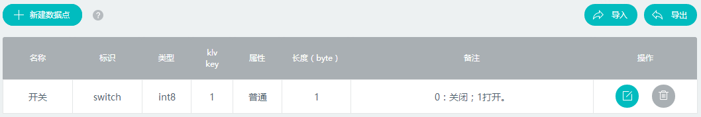
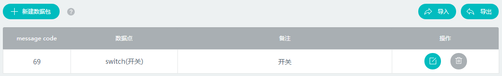
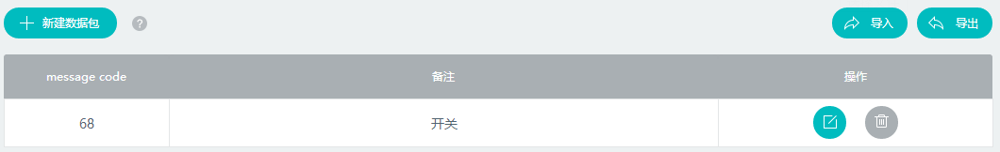

IOS客户端开发指导
开发环境设置
系统准备
在进行开发前，需要对系统以及环境进行设置。目前框架支持Objective-C、C语言，因此系统准备基本都是和iOS开发相关，如Mac OS X、Xcode等。 + OS X 系统建议采用Mac OS X 10.8以上的版本 + Xcode 安装Xcode，建议采用6.0以上版本 + ablecloud 下载ablecloud开发框架并解压
Xcode
- 新建工程 选择新建iOS Application，根据需要选择，建议选择Single View Application。 点击Next进入下一个页面，根据情况填写Product Name/Organization Name/Organization Identifier等信息。 填好后点击Next，进入下一步，填写好存放路径。 至此，新建工程完成。
- 导入AbleCloudLib 按照步骤1完成了工程的新建，接下来需要将AbleCloudLib导入到工程中。 右键点击工程中想要导入的Group选择 Add Files to "your project name"... 选择AbleCloudLib的路径，勾选Copy items if needed，点击Add添加。 完成上述步骤后，我们将在工程视图里面看到该目录。 至此，开发者开发服务所以来的ablecloud开发框架库添加成功。
- 本地运行
Xcode下直接Command + R运行。
注：如果是模拟器运行请导入模拟器的静态库，如果是真机运行则导入真机静态库，否则在编译的过程中会失败。
帐号管理
该服务用于管理和某一智能设备相关的用户，比如查看用户的基本信息/状态等。发现异常用户时，服务程序能及时做出相应操作。
接口说明
引入头文件
import "ACAccountManager.h"
账号管理类
@interface ACAccountManager : NSObject
普通帐号注册流程
1、检查手机号是否已注册
[ACAccountManager checkExist:phoneNum callback:^(BOOL exist, NSError *error) {
if(error){
//返回失败信息，根据error做不同的提示或者处理}else{
if (exist) {
//提示手机号已经存在
}else{
//发送验证码
}
}
}];
2、发送验证码
<<<<<<< HEAD
//1代表Ablecloud短信内容的模版，具体开发需要先把短信内容模版提交到Ablecloud再获取对应的参数
=======
```objectivec
>>>>>>> d84050087dcaf994eb56b5c637ee8e4eaf37daef
[ACAccountManager sendVerifyCodeWithAccount:phoneNum template:1 callback:^(NSError *error) {
if (error == nil) {
//校验验证码
}else{
//获取失败，根据error做不同的提示或者处理
}
}];
3、检测验证码正确性
<<<<<<< HEAD
//phone和email可任选其一
=======
```objectivec
>>>>>>> d84050087dcaf994eb56b5c637ee8e4eaf37daef
[ACAccountManager checkVerifyCodeWithAccount:phoneNum verifyCode:verifyCode callback:^(BOOL valid, NSError *error) {
if(error){
//返回失败信息，根据error做不同的提示或者处理
}else{
if (valid) {
//注册
}else{
//提示验证码错误
}
}
}];
4、注册
[ACAccountManager registerWithNickName:userName phone:self.phoneNum email:nil password:passwd verifyCode:self.verifyCode callback:^(ACUserInfo *user, NSError *error) {
if (error == nil) {
//获得用户user.userId和user.nickName，进入主页或设备管理
}else {
//用户不合法
}
}];
二、第三方登录

1、直接使用第三方登录
[ACAccountManager registerWithNickName:userName phone:phone email:nil password:pwd verifyCode:verify callback:^(ACUserInfo *user, NSError *error) {
if(error){
//返回失败信息，根据error做不同的提示或者处理
}else{
//获得用户user.userId和user.nickName，进入主页或设备管理
}
}];
[ACAccountManager registerWithNickName:userName phone:self.phoneNum email:nil password:passwd verifyCode:self.verifyCode callback:^(ACUserInfo *user, NSError *error)
{
if(error){
//返回失败信息，根据error做不同的提示或者处理
}else{
//根据获得的user，得到基本信息
}
}];
2、在已有普通账号登录时绑定第三方账号
[ACAccountManager registerWithNickName:userName phone:self.phoneNum email:nil password:passwd verifyCode:self.verifyCode callback:^(ACUserInfo *user, NSError *error)
{
if(error){
//返回失败信息，根据error做不同的提示或者处理
}else{
//绑定成功
}
}];
三、添加帐号扩展属性
使用账号扩展属性需要先到AbleCloud官网平台上的用户管理添加扩展属性
1、使用类
@interface ACAccountManager : NSObject
2、设置用户自定义扩展属性
/**
* 修改帐号扩展属性
*注意此处put进去的key与value类型需要跟平台添加的附加属 性一致
*如：ACObject * profile = [[ACObject alloc]init];
*[profile putValue:@"a" forKey:@"北京"];
*[profile putValue:@"b" forKey:@"生日"];
*/
[ACAccountManager setUserProfile:acObj callback:^(NSError *error) {
if(error){
//返回失败信息，根据error做不同的提示或者处理
}else{
//修改成功
}
}];
3、获取用户自定义扩展属性
[ACAccountManager getUserProfile:^(ACObject *profile, NSError *error)
{
if(error){
//返回失败信息，根据error做不同的提示或者处理
}else{
//获取成功
}
}
设备管理
独立设备
功能介绍参见 功能说明-功能介绍-独立设备管理
用户登录/注册后，需要绑定设备才能够使用。对于wifi设备，绑定设备时，首先需在APP上给出配置设备进入Smartconfig状态的提示；然后填写当前手机连接的WiFi的密码，调用startAbleLink将WiFi密码广播给设备，设备拿到WiFi密码后连接到云端然后开始局域网广播自己的物理Id和subdomainID，APP拿到这些信息后调用bindDevice接口绑定设备。对于GPRS设备，则无需以上设备激活的流程，通过扫码或其他方式获取物理Id后调用bindDevice进行绑定。

一．绑定设备
WiFi设备
1.ACWifiLinkManager类
Ablecloud提供了ACWifiLinkManager类激活器供你使用
@interface ACWifiLinkManager : NSObject
- (id)initWithLinkerName:(NSString *)linkerName;
注：linkerName表示开发板型号，如果用的是其它的开发板，则需要改成相对应的值。 目前支持的开发板有
smartlink、oneshot、easyconfig、easylink、smartconfig。
2.获取WiFi SSID
NSString * ssid = [ACWifilinkManager getCurrentSSID];
3.激活设备
APP通过startAbleLink广播自己的WiFi密码，设备成功连上云之后通过广播通知APP同时获取设备物理Id和subDomainId（用来区分设备类型）。当前只支持配置手机当前连接的WiFi。
[wifiManager sendWifiInfo:ssid password:pwd timeout:timeout callback:^(NSArray *localDevices, NSError *error) {
if(error){
//返回失败信息，根据error做不同的提示或者处理，此处一般为1993配置超时错误
}else{
//成功后得到已激活设备的列表，从列表中得到物理id后进行绑定
}
}];
设备无法激活时，请检查以下问题：
- 1.确认WIFI密码是否输入正确。
- 2.确认路由器的广播功能有没有被禁用。
- 3.设备的秘钥可能存在问题。
4.绑定设备
通过获取到的subdomainID匹配subdomian，然后在成功激活设备后的回调方法中，通过subdomian和物理Id绑定设备。
[ACBindManager bindDeviceWithSubDomain:subdomain physicalDeviceId:tmpdevice.deviceId
name:[deviceNames objectAtIndex:i] callback:^(ACUserDevice *userDevice, NSError *error)
{
if(error){
//返回失败信息，根据error做不同的提示或者处理
}else{
//绑定成功后返回设备信息
}
}];
设备无法绑定时，请检查以下问题：
- 1.设备已经被其他人绑定过了。
- 2.设备的domain和subdomain信息有误。
- 3.电源供电是否正常，建议更换电源。
- 4.确保设备的天线正常。
- 5.确保网络环境不是公共环境。
绑定成功后，通过listdevice 接口可以列出已经绑定的设备列表。如果无法列出设备列表，请检查以下问题：
- 1.设备电源供电不足造成断网。
- 2.WIFI信号不好造成断网。
- 3.路由器断网。
GPRS设备
注：GPRS设备无需激活流程，设备连接到GPRS后会自动连接云端完成激活。因此设备上电后就可以直接进入绑定流程。建议通过扫二维码的形式获取物理Id进行绑定。
[ACBindManager bindDeviceWithSubDomain:subdomain physicalDeviceId:tmpdevice.deviceId
name:[deviceNames objectAtIndex:i] callback:^(ACUserDevice *userDevice, NSError *error)
{
if(error){
//返回失败信息，根据error做不同的提示或者处理
}else{
//绑定成功后返回设备信息
}
}];
建议流程：若设备上有是否连接上AbleCloud云端的指示灯，则可以提示用户在指示灯亮起的时候绑定设备。若无指示灯，则可在用户点击开始绑定之后，建议通过CountDownTimer每隔2s钟绑定一次设备，在连续绑定几次之后再提示用户失败或成功。
二．分享设备
- 第一种分享方式是管理员输入用户的帐号（手机号）直接把设备分享给用户
- 第二种方式为管理员分享二维码后，用户再通过扫码的形式绑定设备获得设备的使用权。推荐使用第二种分享机制。
1、管理员直接分享设备给普通用户
[ACBindManager bindDeviceWithUserSubdomain:subdomain deviceId:deviceId account:acount callback:^(NSError *error) {
if(error){
//返回失败信息，根据error做不同的提示或者处理
}else{
//成功分享设备给account用户
}
}];
2、管理员通过分享设备二维码的形式分享设备
[ACBindManager getShareCodeWithSubDomain:subDmoain deviceId:deviceId timeout:timeout callback:^(NSString *shareCode, NSError *error) {
if(error){
//返回失败信息，根据error做不同的提示或者处理
}else{
//成功获取分享吗
}
}];
//普通用户通过分享码绑定设备
[ACBindManager bindDeviceWithShareCode:shareCode subDomain:subDomain deviceId:deviceId callback:^(ACUserDevice *userDevice, NSError *error) {
if(error){
//返回失败信息，根据error做不同的提示或者处理
}else{
//成功绑定管理员分享的设备
}
}];
注：管理员分享的二维码有有效期。默认为一个小时。调用getShareCodeWithSubDomain接口时开发者可以自定义有效时间。具体使用方法请参考Reference->客户端-iOS->SDK接口列表->设备管理
三．设备解绑
1、管理员或普通用户解绑设备
注意：如果是管理员解绑设备，那么其他绑定该设备的普通成员也会失去该设备的绑定权。
[ACBindManager unbindDeviceWithSubDomain:subDomian deviceId:deviceId callback:^(NSError *error) {
if(error){
//返回失败信息，根据error做不同的提示或者处理
}else{
//解绑成功
}
}];
2、管理员取消其他普通成员对该设备的控制权
[ACBindManager unbindDeviceWithUserSubDomain:subDomain userId:userId deviceId:deviceId callback:^(NSError *error) {
if(error){
//返回失败信息，根据error做不同的提示或者处理
}else{
//解绑成功
}
}];
网关型设备
功能介绍参见 功能说明-功能介绍-网关型设备管理
网关的绑定流程和WiFi设备是一样的。网关绑定以后绑定子设备的建议流程如下：

该流程只是建议流程的一种。其中openGatewayMatch和closeGatewayMatch接口都是为了方便软件开启配对而开发的接口。如果使用硬件上的操作（如网关上有按钮等）完成网关和子设备的配对，则不需要用到这两个接口。
一．绑定网关
WiFi网关
1.获取ACWifiLinkManager激活器
AbleCloud提供了ACWifiLinkManager激活器供你使用。
@interface ACWifiLinkManager : NSObject
ACWifiLinkManager * wifiManager = [[ACWifiLinkManager alloc] initWithLinkerName:@"easylink"];
注：linkerName表示开发板的型号，如果用的是其它的开发板，则需要修改。
目前支持的开发板有smartlink、oneshot、easyconfig、easylink、smartconfig。
2.得到WiFi SSID
NSString * ssid = [ACWifiLinkManager getCurrentSSID ];
3.激活网关
APP通过startAbleLink广播自己的WiFi密码，设备成功连上云之后通过广播通知APP同时获取设备物理Id和subDomainId（用来区分设备类型）。当前只支持配置手机当前连接的WiFi。
[wifiManager sendWifiInfo:ssid password:pwd timeout:timeout callback:^(NSArray *localDevices, NSError *error) {
if(error){
//返回失败信息，根据error做不同的提示或者处理，此处一般为1993配置超时错误
}else{
//成功后得到已激活设备的列表，从列表中得到物理id后进行绑定
}
}];
4.绑定网关
在成功激活设备后的回调方法中，通过物理Id绑定网关。
[ACBindManager bindGatewayWithSubDomain:subDomain physicalDeviceId:physicalDeviceId name:name callback:^(ACUserDevice *device, NSError *error) {
if(error){
//返回失败信息，根据error做不同的提示或者处理
}else{
//绑定成功后返回设备信息
}
}];
以太网网关
注：以太网网关无需激活流程，在网关插上网线连上云端之后即可以直接进入绑定设备的流程。建议通过扫码的形式获取网关物理Id进行绑定。
[ACBindManager bindGatewayWithSubDomain:subDomain physicalDeviceId:physicalDeviceId name:name callback:^(ACUserDevice *device, NSError *error) {
if(error){
//返回失败信息，根据error做不同的提示或者处理
}else{
//绑定成功后返回设备信息
}
}];
二．绑定子设备
1．开启网关接入配对
//由于子设备接入网关是一个异步的过程，所以建议在这里new一个Timer去定时获取新加入的子设备列表，在activity退出时停止Timer
[ACBindManager openGatewayMatchWithSubDomain:subDomain gatewayDeviceId:gatewayDeviceId time:time callback:^(NSError *error) {
if(error){
//返回失败信息，根据error做不同的提示或者处理
}else{
//列举所有新加入的子设备列表
}
}];
2．列举所有新加入的子设备列表
[ACBindManager listSubDevicesWithSubDomain:subDomain gatewayDeviceId:deviceId callback:^(NSArray *devices, NSError *error) {
if(error){
//返回失败信息，根据error做不同的提示或者处理
}else{
//获取新加入的子设备列表成功
}
}];
注:该接口可以在APP端列出所有当前被网关扫描出来的但之前尚未被添加到该网关的子设备。也就是，列表中的设备都可以直接调用addSubDevice接口添加到网关。
3．绑定子设备
通过上一步获取的子设备列表获取physicalDeviceId进行绑定。 如有用户确认过程的话，则在用户点击确认之后循环调用此接口绑定用户选择的子设备。
[ACBindManager addSubDeviceWithSubDomain:subDomain gatewayDeviceId:deviceId physicalDeviceId:physicalDeviceId name:name callback:^(ACUserDevice *device, NSError *error) {
if(error){
//返回失败信息，根据error做不同的提示或者处理
}else{
//添加子设备成功
}
}];
注：在绑定子设备addSubDevice的success回调里只是成功绑定该physicalDeviceId的单个设备，建议在成功绑定所有子设备之后再提示绑定成功。
若无法添加子设备时，请检查是否有以下问题： 1. 网关掉线 1. 子设备已经被其他人绑定 1. 子设备subdomain填写错误 2. 子设备和网关的连接断开了
设备扩展属性
功能介绍参见 功能说明-功能介绍-设备扩展属性
注意：设备扩展属性需要先进入到控制台产品管理-->产品列表-->管理-->产品属性-->扩展属性-->新建属性，建立完扩展属性列表后才能使用如下接口。
一、设置或者更新设备扩展属性
[ACBindManager setDeviceProfileWithSubDomain:subDomain deviceId:deviceId profile:acobj callback:^(NSError *error) {
if(error){
//返回失败信息，根据error做不同的提示或者处理
}else{
//修改设备扩展属性成功
}
}];
二、获取设备扩展属性
[ACBindManager getDeviceProfileWithSubDomain:subDomain deviceId:deviceId callback:^(ACObject *profile, NSError *error) {
if(error){
//返回失败信息，根据error做不同的提示或者处理
}else{
//获得设备扩展属性成功
}
}];
和云端通信
功能介绍参见 功能说明-功能介绍-和云端通信
说明在设备尚未开发完成时，在管理后台可以启动虚拟设备用于APP的调试。虚拟设备和真实设备使用方法相同，需要先绑定再使用。虚拟设备能够显示APP发到设备的指令，上报数据到云端、填入数据供APP查询。
一、发送消息到设备
KLV格式
KLV协议介绍请参考：reference-设备-KLV协议介绍。
在新建产品的时候选择klv通讯协议，并填写功能点里的数据点与数据包。 这里创建的数据点和数据包如下所示：
【数据点】 
【数据包】 
例如：以开关设备为例,协议如下:
//请求数据包
{ 68 ：[
//数据点[key：value(int8)]
//关灯
{ 1 : 0 },
//开灯
{ 1 : 1 }
]}
//响应数据包
{ 60 ：[
//数据点[key：value(int8)]
//失败
{ 1 : 0 },
//成功
{ 1 : 1 }
]}
定义如下:
@interface ACKLVObject : NSObject
/**
* 获取一个参数值
* @param name 参数名
* @return 参数值
*/
- (ACKLVValue *)getValueForKey:(u_int16_t)key;
- (NSNull *)get:(u_int16_t)key;
- (BOOL)getBool:(u_int16_t)key;
- (Byte)getByte:(u_int16_t)key;
- (short)getShort:(u_int16_t)key;
- (int)getInt:(u_int16_t)key;
- (long)getLong:(u_int16_t)key;
- (float)getFloat:(u_int16_t)key;
- (double)getDouble:(u_int16_t)key;
- (NSString *)getString:(u_int16_t)key;
- (NSData *)getData:(u_int16_t)key;
/**
* 设置一个参数
* @param name 参数名
* @param value 参数值
* @return
*/
- (void)put:(u_int16_t)key;
- (void)putBool:(u_int16_t)key value:(BOOL)value;
- (void)putByte:(u_int16_t)key value:(Byte)value;
- (void)putShort:(u_int16_t)key value:(short)value;
- (void)putInt:(u_int16_t)key value:(int)value;
- (void)putLong:(u_int16_t)key value:(long)value;
- (void)putFloat:(u_int16_t)key value:(float)value;
- (void)putDouble:(u_int16_t)key value:(double)value;
- (void)putString:(u_int16_t)key value:(NSString *)value;
- (void)putData:(u_int16_t)key value:(NSData *)value;
- (BOOL)contains:(u_int16_t)key;
- (NSIndexSet *)getKeys;
- (BOOL)hasObjectData;
- (NSDictionary *)getObjectData;
- (void)setObjectData:(NSDictionary *)data;
二进制格式
在新建产品的时候选择数据格式为二进制，然后在功能点里面创建了数据包
这里创建的数据点和数据包如下所示：
【数据点】

【数据包】 
例如：以开关设备为例,协议如下:
//请求数据包
{ 68 ：[
//关灯(二进制流，由厂商自己解析)
{ 0 , 0 , 0 , 0 },
//开灯(二进制流，由厂商自己解析)
{ 1 , 0 , 0 , 0 }
]}
//响应数据包
{ 102 ：[
//失败(二进制流，由厂商自己解析)
{ 0 , 0 , 0 , 0 },
//成功(二进制流，由厂商自己解析)
{ 1 , 0 , 0 , 0 }
]}
截取开灯代码，如下:
1、设置序列化器
//反序列化
+ (instancetype)unmarshalWithData:(NSData *)data;
//序列化
- (NSData *)marshal;
2、发送到设备
/**
* 网络连接操作灯
*/
- (void)operationLight:(LightOperationType)type
{
DeviceMsg *deMsg = self.device[0];
NSString *subDomain = [[NSUserDefaults standardUserDefaults] stringForKey:@"subDomain"];;
NSInteger deviceId = deMsg.deviceId;
ACDeviceMsg *msg = [[ACDeviceMsg alloc]init];
msg.msgId = 0;
msg.msgCode =68;
Byte content[] ={type,0,0,0};
msg.payload = [NSData dataWithBytes:content length:sizeof(content)];
[ACBindManager sendToDevice:subDomain deviceId:deviceId msg:msg callback:^(ACDeviceMsg *responseMsg, NSError *error) {
if (error) {
NSLog(@"sendToDevice-error:%@",error);
}else
{
NSLog(@"sendToDevice - 成功");
}
}];
}
二、发送消息到服务
注意：serviceName对应服务管理里UDS服务里的服务名称，务必保持一致。进入版本管理之后，查看已上线版本。serviceVersion为主版本号，比如1-0-0，则version为1。
ACMsg * msg = [[ACMsg alloc] init];
msg.context = [ACContext generateContextWithSubDomain:[CommonInfo getSubDomain]];
[msg setName:@"createDeviceInitState"];
[msg putLong:@"deviceId" value:userDevice.deviceId];
[msg putLong:@"subDomainId" value:userDevice.subDomainId];
ACServiceClient *serviceClient = [[ACServiceClient alloc]initWithHost:[CommonInfo getHost] service:[CommonInfo getServiceName] version:1];
[serviceClient sendToService:msg callback:^(ACMsg *responseObject, NSError *error)
{
callback(responseObject,error);
}];
三、实时消息
实时消息第一版的设计与store数据集直接相关，当数据表格的存储有发生变化时，如创建、更新、添加、删除操作时才会下发数据到APP。也就是说，如果要APP上实时显示数据变化，需要在管理后台创建数据集，并指定是否监控该数据集。然后写云端自定义服务，将需要实时显示的数据存储到该数据集中。这样当该数据集有变化时，APP端才能够实时显示对应的数据变化。

1、获取实时消息管理器
#import "ACPushManager.h"
ACPushManager * pushManager = [[ACPushManager alloc] init];
2、创建与服务器的连接
[pushManager connectWithCallback:^(NSError *error) {
if (!error) {
//连接成功，可以订阅数据
}else{、
//连接失败，网络错误
}
}];```
####3、订阅实时数据
以如下数据集为例：

```c
//实例化ACPushTable对象
ACPushTable *table = [[ACPushTable alloc] init];
//设置订阅的表名
table.className = @"BramcDeviceManager";
//设置订阅的columns行
table.cloumns = [NSMutableArray arrayWithObjects:@"speed", nil];
//设置监听类型，如以下为只要发生创建、删除、替换、更新数据集的时候即会推送数据
table.opType = OPTYPE_CREATE |OPTYPE_DELETE | OPTYPE_REPLACE | OPTYPE_UPDATE;
//设置监听主键，此处对应添加数据集时的监控主键(监控主键必须是数据集主键的子集)
ACObject * primaryKey = [[ACObject alloc] init];
[primaryKey putInteger:@"deviceId" value:100001];
table.primaryKey =primaryKey;
//可以多次调用以下此方法watch多个table
[pushManager watchWithTable:table Callback:^(NSError *error) {
if (!error) {
//订阅成功
}else{
//订阅失败，请自行检查参数类型，表名，columns以及监听主键是否与AbleCloud平台新建的数据集监听主键一致等是否有误。
}
}];
4、接收已订阅的实时数据
[pushManager onReceiveWithCallback:^(ACPushReceive *pushReceive, NSError *error) {
if (!error) {
//pushReceive.className 表名
//pushReceive.opType 接收类型，如ACPushTableOpType.CREATE
//pushReceive.Payload 接收数据ACObject格式
ACObject * obj = pushReceive.payload;
long speed = [obj getLong:@"windSpeed"];
}
}];
5、取消订阅
建议在退出订阅的activity之后调用，避免造成流量浪费。
//实例化ACPushTable对象
ACPushTable *table = [[ACPushTable alloc] init];
//设置订阅的表名
table.className = @"BramcDeviceManager";
//设置监听主键
ACObject * primaryKey = [[ACObject alloc] init];
[primaryKey putInteger:@"deviceId" value:100001];
table.primaryKey =primaryKey;
[pushManager unWatchWithPushTable:table Callback:^(NSError *error) {
if (!error) {
//取消订阅成功
}else{
//取消订阅失败，请自行检查参数类型，表名以及监听主键是否与AbleCloud平台新建的数据集监听主键一致等是否有误。
}
}];
局域网通信
功能说明参见功能说明-局域网通信。
获取设备列表（在网络环境差的情况下如果获取不到设备列表会从本地缓存里取设备列表）。
[ACBindManager listDevicesWithStatusCallback:^(NSArray *devices, NSError *error) {
if (!error) {
for (ACUserDevice * device in devices)
{
/**
* 设备在线状态(listDeviceWithStatus时返回，listDevice不返回该值)
* 0不在线 1云端在线 2局域网在线 3云端和局域网同时在线
* 若只选择直连的通讯方式，则只有在2和3的状态下才能往设备发送成功
*/
//设备在线状态
NSInteger status = device.status;
}
}else{
//网络错误且之前从来没有获取过设备列表时返回
}
}];
因为局域网通讯要求设备与APP处于同一个WiFi下，若网络环境变化，如切换WiFi时，直连的状态会发生改变，所以需要监听网络环境变化。
[ACBindManager networkChangeHanderCallback:^(NSError *error) {
if (!error) {
//当手机网络环境变化时，根据具体需求更新界面上的局域网状态或者不做处理或者重新获取设备列表
}
}];
此外，由于网络环境较差或其他原因，使得在获取直连设备时有可能会超时丢包导致更新失败，所以若需要准确实时的获取局域网状态，则需要增加手动刷新局域网状态的功能。
ACloud * cloud = [[ACloud alloc]init];
[cloud findLocalDeviceTimeout:1000 SudDomainId:subDomainId callback:^(NSArray *deviceList, NSError *error) {
if (!error) {
//发现局域网设备,根据更新局域网在线状态或者重新获取设备列表
}else{
//没有局域网设备，更新局域网在线状态或者重新获取设备列表
}
}];
定时任务
功能介绍参见 功能说明-功能介绍-定时任务
||SKIP||
获取定时管理器－－ACTimerManager类
使用默认时区
ACTimerManager ＊ timerMgr=［［ACTimerManager alloc］ init］;
使用自定义时区
- (id)initWithTimeZone:(NSTimeZone *)timeZone {
self = [super init];
if (self) {
self.timeZone = timeZone;
}
return self;
}
添加定时任务
注意：
1、若与设备之间的通讯为二进制或json格式，则需要先设置序列化器（与发送到设备相同），若为klv格式则不需要设置，具体参考与云端通讯中的发送到设备。
2、timePoint的格式为
"yyyy-MM-dd HH:mm:ss"，否则会失败。3、timeCycle需要在timePoint时间点的基础上,选择循环方式。
"once":单次循环
"min":在每分钟的
ss时间点循环执行"hour":在每小时的
mm:ss时间点循环执行"day":在每天的
HH:mm:ss时间点循环执行"month":在每月的
dd HH:mm:ss时间点循环执行"year":在每年的
MM-dd HH:mm:ss时间点循环执行"week[0,1,2,3,4,5,6]":在每星期的
HH:mm:ss时间点循环执行(如周一，周五重复，则表示为"week[1,5]")
添加定时任务
ACDeviceMsg * dmsg = [[ACDeviceMsg alloc] init];
dmsg.msgCode = 68;
//payload根据厂商而定，此处只是示例
dmsg.payload = [OrderInfoTwo getOrderInfo:@"SWITCH_ON"];
[timerMgr addTaskWithdeviceId:self.upDeviceId name:nameStr timePoint:resultString timeCycle:weekStr description:switchStr deviceMsg:dmsg callback:^( NSError *error) {
if (error)
{
NSLog(@"添加定时失败");
}
else
{
NSLog(@"添加定时成功");
}
}];
修改定时任务
接口为modifyTask，其他参数与定义与创建定时任务相同。
开启定时任务
<<<<<<< HEAD
[timerMgr openTaskWithDeviceId:self.upDeivceId taskId:acTask.taskId callback:^(NSError *error) {
=======
```objectivec
[DeviceMsg openTaskWithDeviceId:self.upDeivceId taskId:acTask.taskId callback:^(NSError *error) {
>>>>>>> d84050087dcaf994eb56b5c637ee8e4eaf37daef
if (error) {
NSLog(@"预约开失败－－%@",error);
}else{
NSLog(@"预约开成功");
}
}];
关闭定时任务
[DeviceMsg closeTaskWithDeviceId:self.upDeivceId taskId:acTask.taskId callback:^(NSError *error) {
if (error){
NSLog(@"预约关失败－－%@",error);
}else{
NSLog(@"预约关成功");
}
}];
删除定时任务
<<<<<<< HEAD
[timerMgr deleteTaskWithDeviceId:self.upDeivceId taskId:ac.taskId callback:^(NSError *error){
=======
```objectivec
[DeviceMsg deleteTaskWithDeviceId:self.upDeivceId taskId:ac.taskId callback:^(NSError *error){
>>>>>>> d84050087dcaf994eb56b5c637ee8e4eaf37daef
if (error){
//删除定时失败，处理error
}else{
//删除定时成功
}
}];
获取定时任务列表
<<<<<<< HEAD
[timerMgr listTasksWithDeviceId:deviceId callback:^(NSArray *timerTaskArray, NSError *error) {
=======
```objectivec
[DeviceMsg firstLoadTimerWithdeviceId:self.upDeivceId callback:^(NSArray *timerTaskArray, NSError *error) {
>>>>>>> d84050087dcaf994eb56b5c637ee8e4eaf37daef
if (error)
{
NSLog(@"获取定时信息失败%@",error);
}
else
{
//获取定时任务成功
}
}];
OTA
功能介绍参见 功能说明-功能介绍-OTA
||SKIP||

说明参见功能说明-OTA。
若使用场景为开启APP之后自动检测升级，建议把检测升级过程放在application里，并维护一个deviceId和ACOTAUpgradeInfo的映射关系，通过static修饰放到内存里，在进入OTA升级页面后可以直接取出来显示。如想实现用户取消升级之后不再提示功能，则可以自己维护一个变量记录。
一.获取OTA管理器对象--ACOTAManager类
@interface ACOTAManager : NSObject
二. 检查升级
检查设备是否有新的OTA版本，同时获取升级日志。
[ACOTAManager checkUpdateWithSubDomain:subDomain deviceId:deviceId callback:^(ACOTAUpgradeInfo *upgradeInfo, NSError *error) {
if(error){
//返回失败信息，根据error做不同的提示或者处理
}else{
/*
*ACOTAUpgradeInfo *upgradeInfo = [[ACOTAUpgradeInfo alloc] init];
* 通过判断upgradeInfo.oldVersion和upgradeInfo.upgradeVersion是否相等判断是否有新版本更新
* upgradeInfo.oldVersion为老版本，upgradeInfo.upgradeVersion upgradeInfo.upgradeLog为升级日志
*/
}
}];
三．确认升级
[ACOTAManager confirmUpdateWithSubDomain:subDomain deviceId:deviceId newVersion:newVersion callback:^(NSError *error) {
if(error){
//返回失败信息，根据error做不同的提示或者处理
}else{
//确认升级
}
}];
推送
功能介绍参见 功能说明-功能介绍-和云端通信
AbleCloud的推送使用友盟的服务，在开发功能之前，现需要进行一些配置。
推送开发准备
下面以友盟推送为例，介绍开发推送功能前需要做的准备工作。
首先，需要创建友盟推送账号，并创建应用（安卓和iOS版本需要单独创建），如下图所示。

记录“应用信息”中的AppKey和App Master Secret，将其填写到test.ablecloud.cn中。AbleCloud和友盟已经达成合作协议，服务器IP地址一项不需要填写。

友盟平台配置完成后，到AbleCloud的管理后台的推送管理页面填写对应信息即可使用AbleCloud提供的推送服务。
注意
1、调试的时候若开发环境配置有变化的话尽量手动卸载APP之后再重新安装。
2、推荐先登录友盟推送的后台进行推送测试，若能收到推送通知即代表流程通过，最后再与UDS服务进行下一步测试。
3、推荐先使用友盟推送后台的设备状态查询（通过接口获取）或者设备别名查询（即登录成功之后的userId）等工具确认是否成功注册推送服务。若注册成功之后仍没有收到通知消息，再检查一下开发环境配置。
一、推送准备
添加 AppKey 和 Umeng Message Secret
二、开启推送服务
AbleCloud在SDK中提供了与推送服务相关的接口（封装了友盟的部分接口），定义如下：
1、获取推送管理器－－ACNotificationManager类
@interface ACNotificationManager : NSObject
2、在应用的启动函数中开启推送服务
- (BOOL)application:(UIApplication *)application didFinishLaunchingWithOptions:(NSDictionary *)launchOptions
{
[ACNotificationManager startWithAppkey:@"您的appKey" launchOptions:launchOptions];
}
3、在登录成功之后添加推送别名
[ACNotificationManager addAliasWithUserId:user.userId callback:^(NSError *error) {
if(error){
NSLog(@"推送添加别名失败");
}else{
//成功
}
}];
4、在退出登录之后移除掉旧的别名
[ACNotificationManager removeAliasWithUserId:uid callback:^(NSError *error){
if(error){
//移除失败，处理错误信息
}else{
//移除成功
}
}
文件存储
功能介绍参见 功能说明-功能介绍-文件存储
注意：
1、iOS权限原因，下载文件上传文件到云端只能在本应用的沙盒中操作
2、文件下载功能是基于系统自带的NSURLSession框架实现,文件上传功能是借助第三方七牛云存储实现
3、上传下载支持断点续传功能
一、获取文件管理器
ACFileManager * fileManager =[[ACFileManager alloc] init];
二、下载文件
1、获取下载url
[ACFileManager getDownloadUrlWithfile:fileInfo ExpireTime:0 payloadCallback:^(NSString *urlString, NSError *error)
{
if(error ){
//获取URL失败，根据error作出不同的处理
}else{
//下载文件
}
}
2、根据url下载文件
[downManager downFileWithsession:urlString callBack:^(float progress, NSError *error)
{
if(error ){
//下载失败，处理error
}else{
//下载成功，处理下载的文件
}
}
三、上传文件
1、设置上传文件的权限管理类－－ACACL
@interface ACACL : NSObject
规则：优先判断黑名单，黑名单命中后其他设置无效，其次判断白名单，最后判断全局设置属性。
2、上传文件
1)、设置上传文件信息－－ACFileInfo类
@interface ACFileInfo : NSObject
//上传文件名字
@property (copy,nonatomic) NSString * name;
//上传文件路径，支持断点续传
@property (copy,nonatomic) NSString * filePath;
//文件访问权限 如果不设置 则默认
@property (retain,nonatomic) ACACL * acl;
//文件存储的空间 用户自定义 如名字为Image或者text的文件夹下
@property (copy,nonatomic) NSString * bucket;
-(id)initWithName:(NSString *)name bucket:(NSString *)bucket ;
+ (instancetype)fileInfoWithName:(NSString *)name bucket:(NSString *)bucket ;
2)、设置文件权限
/**
* 设置全局可读访问权限，不设置则默认为所有人可读
* @param allow 是否全局可读
*/
-(void)setPublicReadAccess:(BOOL)allow;
/**
* 设置全局可写访问权限，不设置则默认为除自己外的所有人不可写
* @param allow 是否全局可写
*/
-(void)setPublicWriteAccess:(BOOL)allow;
/**
* 设置用户可访问权限（白名单）
* @param opType 权限类型，OpType.READ为可读权限，OpType.WRITE为可写权限
* @param userId 被设置用户Id
*/
-(void)setUserAccess:(OpType)optype userId:(long)userId;
/**
* 设置用户访问权限（黑名单）
* @param opType 权限类型，OpType.READ为可读权限，OpType.WRITE为可写权限
* @param userId 被设置用户Id
*/
-(void)setUserDeny:(OpType)optype userId:(long)userId;
3)、上传文件
ACFileInfo * fileInfo = [[ACFileInfo alloc] initWithName:@"3.jpg" bucket:@"jpg"];
fileInfo.filePath = [self getPath];
fileInfo.acl = [[ACACL alloc] init];
upManager = [[ACFileManager alloc] init];
[upManager uploadFileWithfileInfo:fileInfo progressCallback:^(NSString *key, float progress)
{
if(error){
//上传失败，处理error
}else{
//上传成功
}
}
/**
* //取消上传
* @param subDomain 用户subDmomain
* @param fileInfo 文件信息
*/
-(void)cancleUploadWithfileInfo:(ACFileInfo *)fileInfo;
Error Code
- 建议在调用AbleCloud云服务接口之前先判断网络处于可访问状态之后再调用相关接口，可以省去对error回调里网络错误的处理。
- 调试阶段，可通过返回的ACMsg 调用- (NSInteger)getErrCode; 和- (NSString *)getErrMsg;获取错误信息。